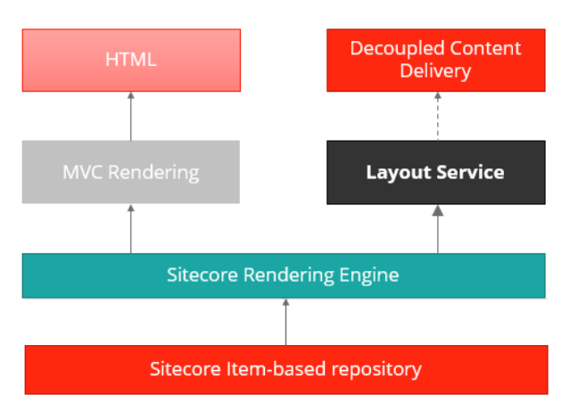
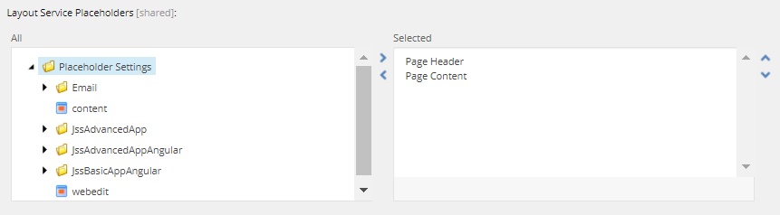

Layout Service
Get JSON-formatted Sitecore layout and content data for decoupled front-end applications.
The Sitecore Layout Service is a Sitecore Headless Services endpoint that exposes Sitecore layout information as structured JavaScript Object Notation (JSON) data.
The service leverages the Sitecore Rendering Engine to produce structured JSON output, decoupling layout and rendering, and allowing you to render Sitecore components with any front-end technology stack capable of consuming JSON data.
Tip
You can fetch data from the Layout Service using a REST or a GraphQL endpoint. For documentation about the GraphQL endpoint, refer to Sitecore Experience Edge for XM.
The following diagram shows the layout data response flow from Sitecore to decoupled front-end applications.
|  |
Layout Service actions
The Layout Service exposes two actions:
Getting the output of the whole layout for the item.
Getting the output of a particular placeholder.
To resolve to the desired Site Context, invoke the layout service using the sc_site query string parameter or using a hostname because Layout Service paths are relative to the Home item of the site.
Getting the output of the whole layout for the item
To get the full layout output for an item, you must invoke the render endpoint of the Layout Service:
/sitecore/api/layout/render/[config]?item=[path]&sc_lang=[language]&sc_apikey=[key]&tracking=[true|false]&sc_site=[your-site-name]
The available parameters are:
Parameter | Description |
|---|---|
| The name of the Layout Service configuration to use. For JSS, this is usually jss. |
| The path to the item, relative to the context site's home item or item GUID (ID). |
| The language version of the item you want to retrieve. |
| An SSC API Key configured for use with the Layout Service controller ( |
| The name of the site to fetch data for. Needed for the analytics tracking included in Layout Service calls. |
| Only available when using Sitecore XP. Enables/disables analytics tracking for the Layout Service invocation. Default is |
Getting the output of a particular placeholder
This action is useful in special circumstances when your app needs to access a portion of the layout, minimizing the amount of data processed and sent over the wire.
/sitecore/api/layout/placeholder/[config]?placeholderName=/main&item=[path]&sc_lang=[language]&sc_apikey=[key]&tracking=[true|false]
This action accepts the same parameters as the /render action described previously, as well as the following:
Parameter | Description |
|---|---|
| The name of the placeholder to render. You can retrieve the value of this parameter from the layout details in the Content Editor. Due to the dynamic placeholders used out of the box for the |
Anatomy of a Layout Service request
When the Layout Service receives a request, for example, /sitecore/api/layout/render/jss?item=/about , the following process occurs on the server:
Note
The jss represents a named configuration of the Layout Service. You can register your own named configurations to create application-specific Layout Service extensions. See Using a custom Layout Service configuration with JSS.
A controller parses the
?item=/aboutparameter.The Layout Service performs an item lookup based on the
itemparameter, which takes into account the start item of the context site. The logic matches standard Sitecore URL handling. Item GUIDs are also allowed.After resolving the item, the Layout Service utilizes placeholder data in Layout and Rendering definition items to render the item to an object structure.
A JavaScript serializer takes the component's data source item(s) and serializes them into a JavaScript object.
Note
You can customize a rendering's serialized output by creating an implementation of
Sitecore.LayoutService.ItemRendering.IRenderingContentsResolverand specifying the type in the rendering'sRendering Contents Resolverfield.The output is then assembled and returned in JSON format.
Layout Service data
The Layout Service provides the following JSON-formatted structured data about the requested Sitecore item:
Field values and metadata, including the item's ID and template.
Placeholders and their renderings in a nested tree structure that illustrates the parent/child relationships in the layout. This simplifies the rendering logic in the client significantly.
Serialized content associated with the rendering. By default, this is the rendering's datasource item.
It renders Sitecore fields to structured JSON based on field types, allowing for structured use of field values and metadata (for example, image alt text).
Customizable context data, useful for rendering. For example, data from
Sitecore.Contextsuch as the current site, user, and editing mode.
When invoked in editing mode, the Layout Service includes data that supports inline editing, such as:
Rendered fields with editor markup for inline editing.
Additional markup for renderings and placeholders that enable the inline editor to insert editing controls.
Sitecore fields and Layout Service field serializers
The Layout Service can serialize the following types of Sitecore fields:
Rich Text
Image
General Link
Date / Datetime
Checkbox
Links (Droplink, Droptree, Grouped Droplink)
Multi-links (Multlist, Checklist, Treelist, Exten and their variants)
Number
File
Plain text (Single-line text, Multi-line text)
All other field types are treated as plain text as well and are output with their raw value.
Layout Service and Sitecore Placeholders
To return an item's full structured layout data, the Layout Service must know the placeholders on a rendering.
To make these exposed placeholders discoverable, the Layout Service Placeholders field must be populated.
|  |
Warning
Do not confuse this with the Allowed Controls on Placeholder Settings, defining the renderings that can be added to a placeholder. The Layout Service Placeholders field defines the placeholders to use within the frontend rendering host.
Dynamic Placeholder Keys
By default, the Layout Service assumes that all placeholders other than the root placeholder (usually main) are dynamic placeholders and will use Sitecore's built-in dynamic placeholder logic to determine which placeholder keys to render.